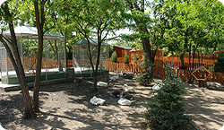
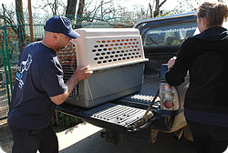
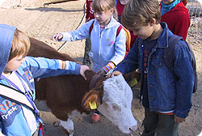
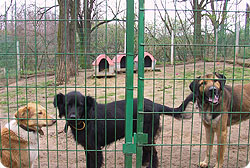

2014.04.17.
Budapest legnagyobb állatotthona 1992 óta menti a bajba jutott, megkínzott és balesetet szenvedett állatokat. Jelenleg közel ezer állat, köztük kutyák, macskák, malacok és főemlősök élnek 8 hektáros menhelyünkön, ahol átmeneti vagy végleges otthonra találnak.
A NOÉ Állatotthon Alapítvány Budapest legnagyobb állatmenhelye, amely 1992 óta működik. Az alapítvány 2000-ben alakult, és azóta is önerőből, állami támogatás nélkül látja el a rászoruló állatokat. Zoli és Hédi álmodta meg azt a világot, ahol minden állatnak joga van az élethez. Az évek során sokat áldoztak, hogy segítsenek a hontalan állatokon, végül több száz állat talált otthonra náluk. Zoli továbbra is elkötelezetten védi az állatokat, míg családjával egy kis faházban él az állatotthon területén.
Alapítványunk egyik legfontosabb elve, hogy minden élőlénynek joga van az élethez, ezért egyetlen állatot sem altatunk el, kivéve a súlyosan sérült, menthetetlen eseteket. Minden állat, legyen az öreg, sérült vagy éppen "csúnyácska", teljes életet élhet nálunk. Külön részleget alakítottunk ki az idős állatok és a traumás múltú kutyák számára, akik a "Lelkibeteg Udvar" lakói, és akiket korábban bántalmaztak, de rehabilitációjuk nem sikerült teljes mértékben.
Állatmentő szolgálatunk célja a bántalmazott, elütött vagy elhagyott állatok azonnali orvosi ellátása. Esetenként állatkínzások miatt is riasztanak minket, ilyenkor nemcsak az állatokról, hanem a bűncselekmény elkövetőjéről is gondoskodnunk kell.
Katasztrófacsoportunk a természeti vagy ipari balesetek során segít, például részt vettünk a 2001-es beregi árvíz és a 2010-es vörös iszap katasztrófa állatmentésében.
Fontos célunk a felelős állattartásra nevelés, ezért 2004 óta működtetjük Állatvédelmi Oktató Programunkat, amely keretében iskolai csoportok látogatnak el hozzánk, és állatorvosok tartanak előadásokat. Célunk, hogy a fiatalok megismerjék az állatok szükségleteit és az állatbarát nevelés alapjait.
Munkánk elismeréseként 2002-ben az Év Állatotthona címet kaptuk a Magyar Újságírók Országos Szövetsége Természet és Állatvédő Szakosztályától.
A MiniMenhely-projekt 2004 óta működik, célja az altatásra ítélt és bántalmazott állatok mentése, rehabilitációja és gazdához juttatása. Az állatotthon területén egy önkéntesek által épített mini menhely folyamatosan fogadja a rászoruló kutyákat, és mára a kennelszám megtriplázódott.
Fajtamentő csoportjaink is aktívan dolgoznak: 2006 óta a Boxer, 2009 óta a Bulldog, Csau-csau és Cane Corso fajtamentő csoportok segítik a fajtatiszta kutyák megmentését és rehabilitációját.
További információk programjainkról weboldalainkon találhatóak.
